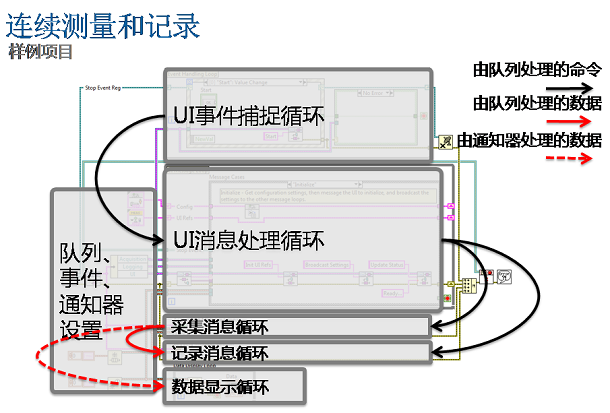

连续测量和记录
LabVIEW 2013
“连续测量和记录”范例项目可进行连续测量并将结果记录至磁盘。它可以并行执行5个循环：
- 事件处理(Main.vi)－根据前面板事件生成消息的事件处理循环(EHL)。例如，用户单击开始或设置。
- UI消息(Main.vi)－从EHL接收消息并发送响应消息至其他MHL的消息处理循环(MHL)。
- 采集数据(Acquisition.lvlib:Acquisition Message Loop.vi)－连续采集数据的MHL。默认情况下，该模板仿真采集数据。
- 记录数据(Logging.lvlib:Logging Message Loop.vi)－连续记录采集数据的MHL。
- 显示数据(Main.vi)－用采集数据更新波形图表的While循环。
该范例项目还包含一个配置对话框(Settings.lvlib)，可用来配置应用程序。
本范例项目以“队列消息处理器”模板为基础。关于该模板如何运行的详细信息，见创建项目对话框中的“队列消息处理器”模板及文档。
开发者走查
关于“队列消息处理器”模板开发者走查的详细信息见ni.com。
系统要求
LabVIEW基础版、完整版或专业版开发系统。本范例项目需要和NI-DAQmx、仪器驱动程序或其他驱动软件配合使用。
项目框图

使用条件
“连续测量和记录”范例项目主要用于需要交互式用户界面的连续测量应用程序；即应用程序执行其他命令时，用户可以单击按钮。
运行本范例项目
- 在项目浏览器窗口，打开并运行Main.vi。
- 单击开始。程序开始采集仿真波形数据。
- 单击前面板上的其他按钮，查看其他功能。
修改本范例项目
添加数据采集代码
采集硬件数据前必须修改本范例项目。按照下列步骤，修改范例项目：
- 添加硬件引用句柄至Acquisition.lvlib:Hardware Configuration.ctl。例如，可使用下列对象：
- 添加硬件初始化代码至Acquisition.lvlib:Initialize Hardware References.vi。例如，可使用下列对象：
- “DAQmx任务名”常量
- “DAQmx创建虚拟通道”VI
- 仪器驱动程序的“初始化”VI(Initialize.vi)
- 添加硬件配置代码至Acquisition.lvlib:Configure Hardware.vi。例如，可使用下列VI：
- “DAQmx定时”VI
- “DAQmx触发”VI
- 仪器驱动程序的“配置测量”VI(Configure Measurement.vi)
- 仪器驱动程序的“配置自动归零”VI(Configure Auto Zero.vi)
- 添加数据采集代码至Acquisition.lvlib:Acquire.vi。例如，可使用下列VI：
- “DAQmx读取”VI
- 仪器驱动程序的“读取”VI(Read.vi)
- 添加停止数据采集的代码至Acquisition.lvlib:Stop Acquisition.vi。例如，可使用下列VI：
- “DAQmx清除任务”VI
- 仪器驱动程序的“关闭”VI(Close.vi)
自定义数据记录代码
如默认记录操作无法满足应用程序需求，可按照下列方式修改本范例项目：
- 运行Main.vi，单击设置，使用记录文件路径控件可指定记录数据的位置。默认情况下，该模板会将数据记录至LabVIEW Data\Logged Data.tdms，其中LabVIEW Data为LabVIEW数据文件夹。
- 如需改变数据记录的方式，可修改Logging.lvlib:Logging Message Loop.vi。例如，用户可修改该VI，将采集到的数据通过数据流方式写入网络或磁盘。
- 如需更改将数据写入磁盘的代码，可修改Logging.lvlib:Log Data.vi。例如也可使用导出波形至电子表格文件或者写入电子表格文件VI。默认情况下该模板会通过TDMS函数将数据记录至.tdms文件。
- 如需修改或添加数据记录所需的路径和文件引用句柄，可修改Logging.lvlib:Logging Configuration.ctl。
涉及的LabVIEW功能和概念
重要信息
版权
© 2013 National Instruments.版权所有
根据版权法，未经National Instruments公司事先书面同意，本发行物不得以任何形式（包括电子或机械形式）进行全部或部分复制或传播，包括影印、录制、储存于任何信息检索系统中，或翻译。
National Instruments公司尊重他方的知识产权，也恳请用户能给予我们同样的尊重。NI软件受版权法及其他知识产权法的保护。在将NI软件用于复制为他方所有的软件或其他资料的任何场合，NI软件仅可用于在符合许可证或其他法律限制的情况下复制上述资料。
最终用户许可协议和第三方法律声明
可在下列位置找到最终用户许可协议(EULA)和第三方法律声明：
- <National Instruments>\_Legal Information和<National Instruments>目录下有法律声明。
- <National Instruments>\Shared\MDF\Legal\license目录下有最终用户许可协议。
- 如需使NI产品生成的安装程序中包含法律相关信息，请参考<National Instruments>\_Legal Information.txt。
商标
LabVIEW、National Instruments、NI、ni.com和National Instruments公司标识，以及鹰形标识均为National Instruments Corporation的商标。关于其他National Instruments商标的详细信息见ni.com/trademarks的Trademark Information部分。
此处提及的其他产品和公司名称均为其各自公司的商标或商业名称。
专利权
关于NI产品和技术的专利权，请查看软件中的帮助»专利信息，光盘中的patents.txt文件，或ni.com/patents上的National Instruments Patent Notice。